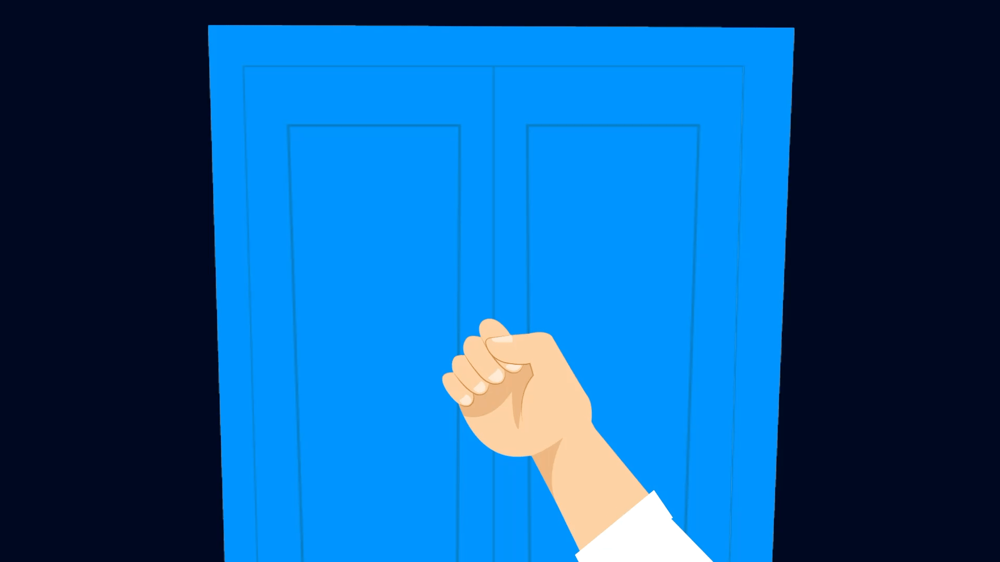
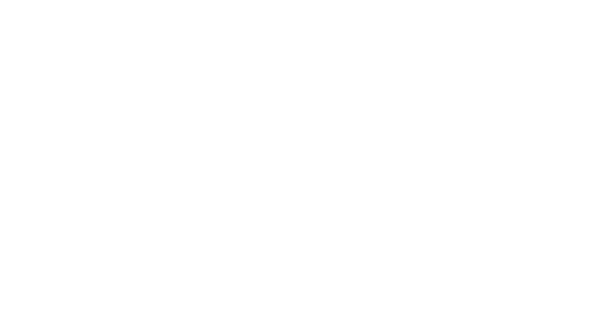
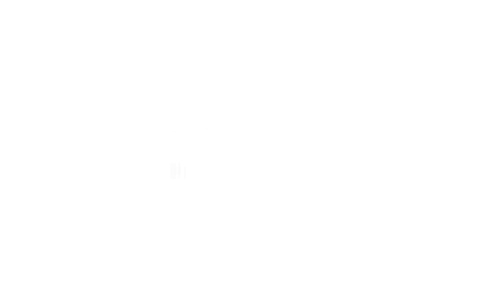

Motion AD for PWC Edge
A clean, motion-driven brand film designed to launch PwC Edge on Entri through engaging and impactful visual design.
Breakdown



Tools Used
After Effects | Illustrator | Premiere Pro
Overview
For this project, I handled the complete motion design and animation process for the launch of PwC Edge on Entri. The goal was to simplify a professional partnership announcement into a visually engaging story using clean design, bold motion, and clear communication.
From concept development to final delivery, every scene was crafted to balance information with visual impact. It was a rewarding project that allowed me to combine storytelling, animation, and design systems into a polished launch film that felt both professional and approachable.